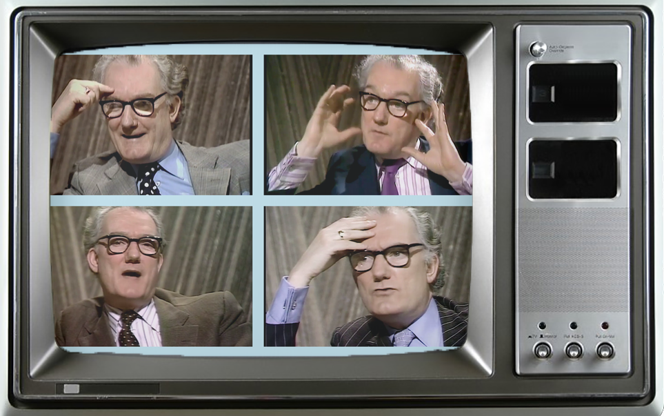

"It seems to me self-evident that [television organisations] should be shooting dozens of hours of material with each of the people whose ideas are most influential in our generation, not for immediate showing but for archival purposes - though it would be easy enough to edit programmes out of it for immediate showing that would pay the cost of the undertaking. It is breathtaking even to imagine what it would be like for us now if we had long and intellectually serious interviews on videotape with Voltaire, Adam Smith, Karl Marx, and so on. Yet for a long time we have been able to do the equivalent thing for our own historical period; and we shall have that ability permanently into the future. But we have not even begun to use it. On the contrary, we destroy most of the records of the historic figures of our own time that we acquire."
Inspired by this passage by Bryan Magee in his autobiography Confessions of a Philosopher (p.410), this webpage hosts my archive of tapes recording the philosophers I believe are most influential in our generation. The idea is to have them just talking about what they love to research. The aim is to store these for future generations who may come to value these informal discussion tapes beyond my own efforts to illustrate their value to the present generation.
initialising tapes... █